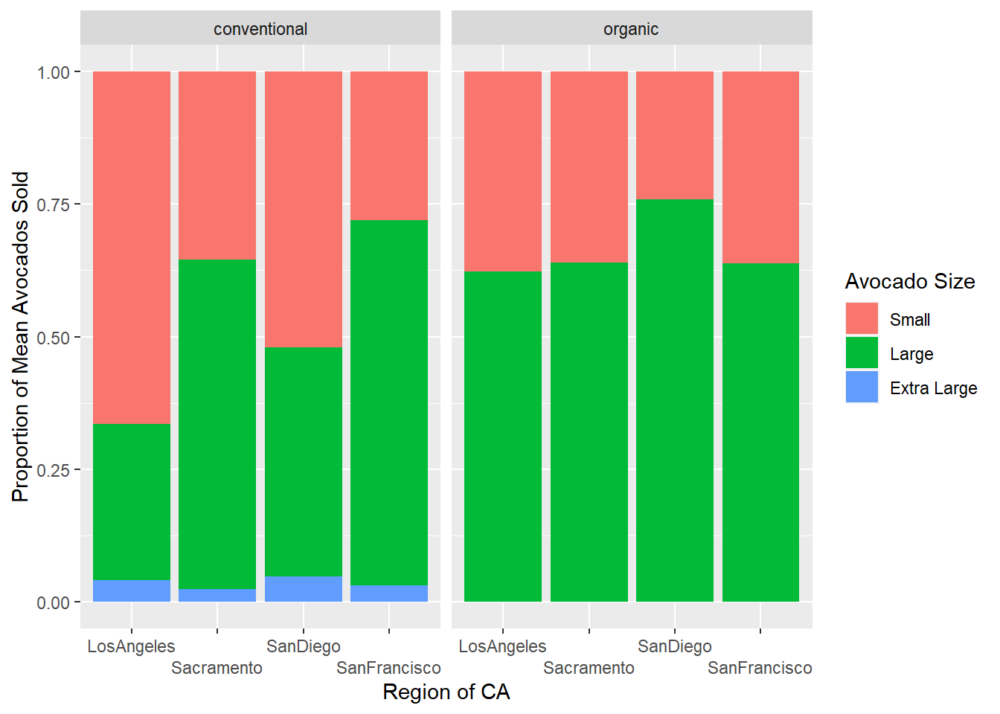

Lab 4: Avocado Prices
1 Instructions
I advise you to focus particularly on:
Setting chunk options carefully.
Making sure you don’t print out more output than you need to.
Making your code readable and nicely formatted. (You will get feedback on your code style from your peers!)
Thinking through your desired result before writing any code.
2 Introduction & Set-up
In this lab we’re going to be looking at avocado prices.
The dataset comes to us from Kaggle and represents weekly retail scan data. It is available to download from Canvas under the name avocado.csv. A description of the data can be found here.
0. Create a Quarto file, load the data, and declare your package dependencies.
1. Briefly describe the dataset. What information does it contain?
2. Clean the data in any way you see fit. In particular, look carefully at the region variable. Notice that the category "LosAngeles" is contained in "California", which is contained in "West", which is contained in "TotalUS". Think about how you want to handle this issue in your analysis.
3 Exercises
3. Which major region sold the most organic, small Hass avocados in 2017?
4. Use the separate() function to split the Date variable into year, month, and day. In which month is the highest volume of avocado sales?
5. Which metro area regions sold the most total avocados? Plot side-by-side boxplots of total volume for only the five regions with the highest averages for the Total Volume variable.
4 Reshaping
The following four California regions are in this dataset: "LosAngeles", "SanDiego", "Sacramento", and "SanFrancisco". Answer the following questions about these California regions only.
6. In which regions is the price of organic versus conventional avocados most different? Support your answer with a few summary statistics and a visualization.
7. The following plot shows, for all four California regions, the proportion of the mean Hass avocado sales that are small, large, or extra large; conventional vs. organic. Recreate the plot.
Hint: This will require restructuring of your data!
5 Challenge
A joke in the media is that Millennials can’t afford houses, because they spend all their money buying avocado toast. Let’s use this dataset to address that claim.
Find or make a dataset with house prices for these four California regions. Join this dataset with your California avocado dataset. Use your new joined dataset to make an argument about the relationship between house prices and avocado prices/sales. Support your argument with a plot.